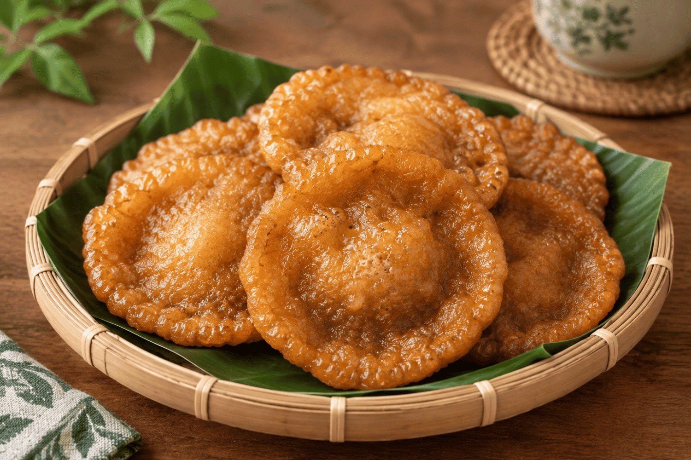
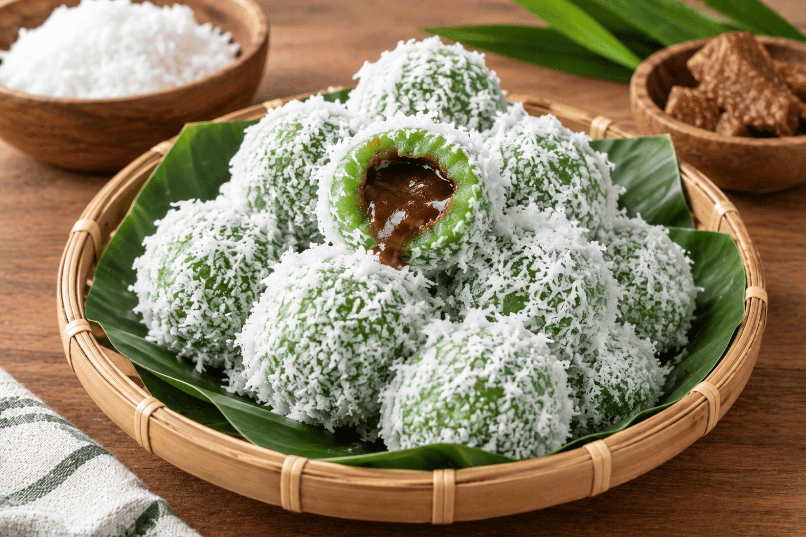
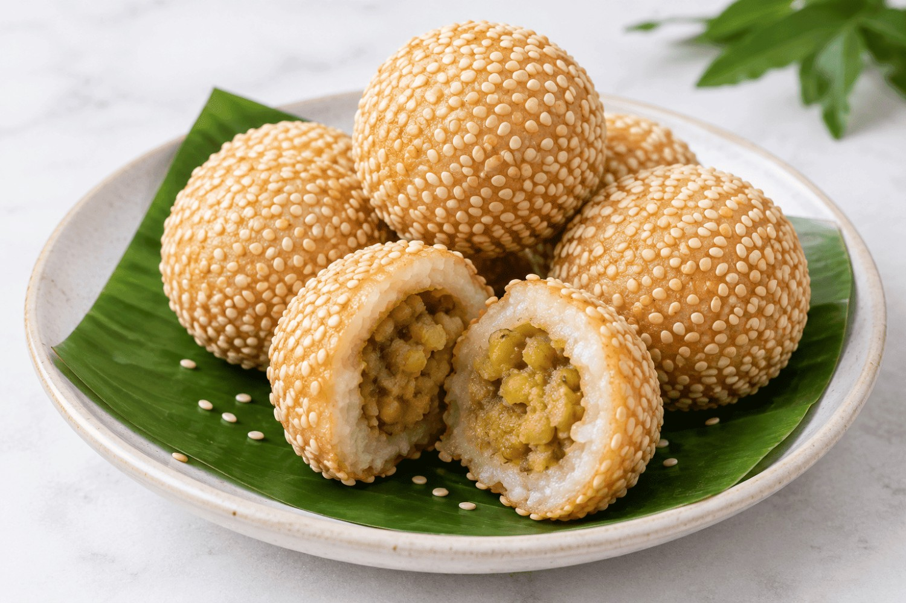
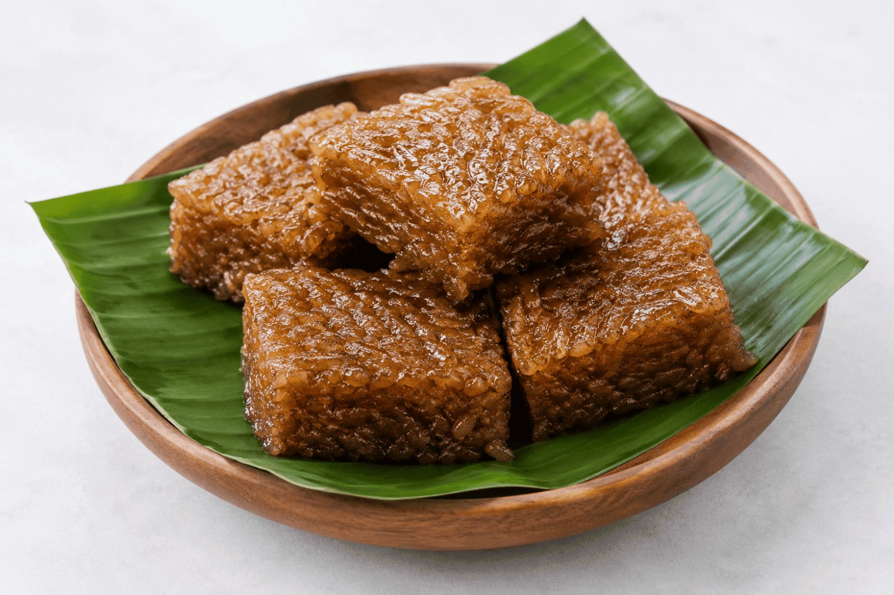
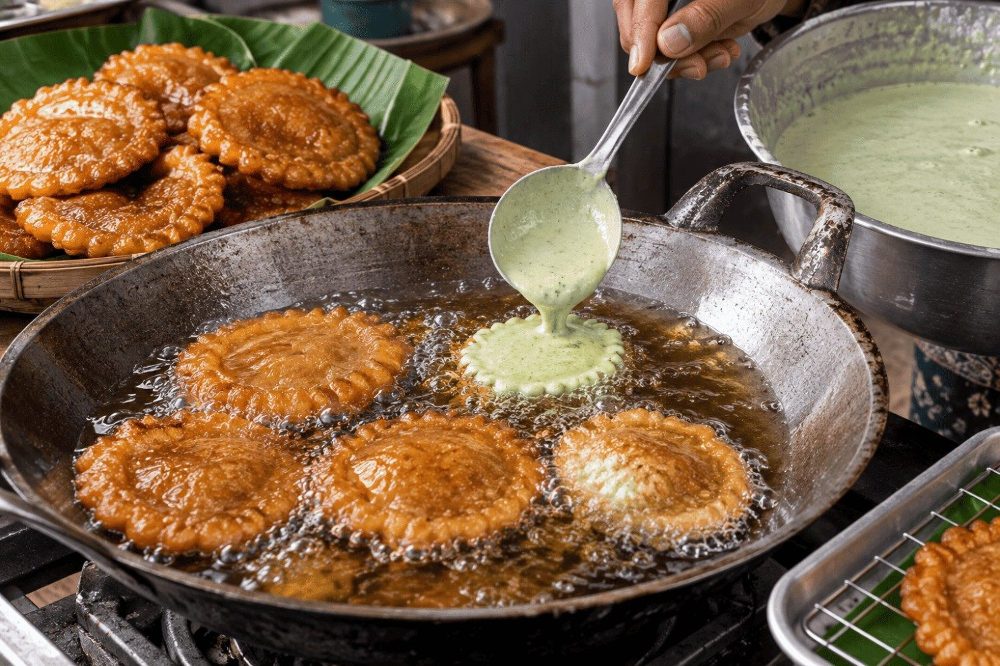

Galeri Cucur Sundariyah
Media Usaha





Nada Penanda Kedai
Nada notifikasi singkat sebagai penanda kedai saat pesanan diterima.





Nada notifikasi singkat sebagai penanda kedai saat pesanan diterima.